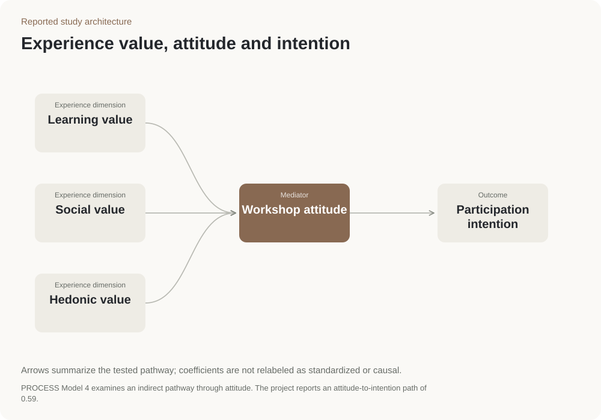

Experience dimension
Learning value
Evaluate the learning component of the workshop experience. The project reports a 0.35 learning-to-attitude path, without enough detail to label it standardized.
Service experience · Melbourne
Examined how what people valued in a workshop related to their view of it and their intention to join.
Experience research · Survey interpretation · Workshop service design
Findings about learning value and questions for improving beginner workshop support.
Survey research project

Participants answered questions about learning, social experience and enjoyment at Ladder Art Space. The analysis examined how these related to their view of the workshop and their intention to take part.
Learning value had the strongest reported link to a positive view of the workshop. A more positive view was, in turn, linked to the intention to participate.
Test clearer learning goals, beginner guidance and feedback. These ideas follow from the survey findings but have not yet been shown to increase bookings.
The survey measured intention at one point in time. It did not establish an increase in bookings or repeat attendance.
The arrows show the relationships examined in the study. The two numbers are reported model coefficients, not percentages or increases in bookings.
The source reports a learning-value → attitude path of 0.35. Its standardized status is not documented, so it remains labelled as a reported path.
Ladder Art Space project record; 216 valid responses; PROCESS Model 4.
Check that the questions measure the intended workshop experiences and attitudes.
PROCESS Model 4 examines whether attitude helps connect experience value with intention to participate. This is called mediation.
Beginner guidance is a proposed service test. Measuring actual bookings would require new data.
Experience value → workshop attitude → participation intention
PROCESS Model 4 includes a direct effect and an indirect effect through the mediator. The figure focuses on the mediated path; the source does not supply the direct coefficient or enough detail to multiply the two displayed paths into a confirmed indirect estimate.
Measurement checks precede the reported PROCESS Model 4 mediation analysis.

Experience dimension
Evaluate the learning component of the workshop experience. The project reports a 0.35 learning-to-attitude path, without enough detail to label it standardized.
Experience dimension
Represent the social component separately from learning and enjoyment. The experience dimensions connect with intention through the workshop-attitude pathway.
Experience dimension
Represent enjoyment as a distinct experience dimension. The reported model connects this value with attitude toward the workshop.
Mediator
PROCESS Model 4 examines an indirect pathway through attitude. The project reports an attitude-to-intention path of 0.59.
Outcome
The source reports 216 valid responses in Melbourne. Intention is not an observed booking or repeat-attendance outcome.